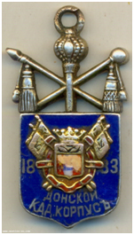

Здание Донского кадетского корпуса. Почтовая открытка. 1990-е гг.
В 1834 г. воронежское дворянство предложило императору Николаю I проект создания в городе кадетского корпуса и выразило готовность выделить на его обустройство 533 тыс. рублей. Однако окончательное решение об открытии в Воронеже кадетского корпуса было принято только в 1836 г., когда воронежский помещик, генерал-майор в отставке Н.Д. Чертков пожертвовал 1 млн. рублей и 2000 душ крепостных в пользу корпуса и просил назвать его Михайловским, в честь великого князя Михаила Павловича. Закладка главного здания корпуса была проведена 14 сентября 1837 г., а 8 ноября 1845 г. Воронежский корпус был открыт.
В начале 1898 г. директор корпуса генерал-лейтенант К.Н. Анчутин подал военному министру памятную записку, в которой он ходатайствовал о присвоению корпусу имени императора Александра III. 18 февраля 1898 г. последовало высочайшее повеление в память основателя именовать корпус «Донским Императора Александра III кадетским корпусом».

Жетон Донского кадетского корпуса.
Для укрепления связи выпускников с корпусом был учрежден корпусной жетон, который выдавался лучшим выпускникам, а также введен обычай на прощальном напутственном молебне благословлять каждого выпускника образком покровителя корпусного храма святого Николая Угодника. Значительное внимание в корпусе уделялось воспитанию патриотизма и преданности Престолу, поэтому в нем с особой торжественностью праздновались Царские дни.
14 ноября 1903 г. Николаем II Донскому корпусу было пожаловано, а 6- мая 1907 г. знамя было освящено и торжественно вручено директору корпуса.
Донской кадетский корпус сполна испытал на себе все горести и трудности периода революции и Гражданской войны в России. В 1917 г. после Октябрьского переворота на Дону началась гражданская война. Кадетский корпус участвовал в защите Дона от наступающей Красной армии. Многие кадеты приняли участие в боевых действиях в рядах участников Ледяного похода генерала Л.Г. Корнилова и Степном походе атамана войска Донского генерал-майора П.Ч. Попова. Некоторые кадеты, несмотря на свой юный возраст, удостоились Георгиевский крестов и медалей. Среди них были Василий Гугняев, Иван Суляев, Аркадий Попов, Михаил Букин, и др. 22 декабря 1919 г., когда стало ясно, что Новочеркасск под угрозой, корпус пешком покинул город и в первой половине февраля 1920 г. прибыл в Новороссийск. Оттуда 22 февраля (по старому стилю)на пароходе «Саратов» кадеты через Дарданеллы и Кипр оказались у Александрии. Сначала их отвезли в местечко Сиди-Башр, где они прошли карантин, а потом переправили в местечко Тэль-Эль-Кебир. Но и оттуда всех вскоре перевели в лагерьвблизи города Измаилия. Через 3 года английское командование решило расформировать кадетский корпус. Старших кадет решили отправить в Болгарию, где была уже русская гимназия; часть - попала в Чехословакию, в Моравску Тшебову, где тоже действовала русская гимназия; а младших решили передать английской школе в Истамбуле. Таким образом, Донской Императора Александра III кадетский корпус перестал существовать.
Однико при эвакуации из Новороссийска не все кадеты и персонал смогли выехать: многие из них заболели тифом. Среди больных был и генерал-лейтенант И.И. Рыковский, который, оправившись после болезни, собрал группу в полтора десятка кадет и нескольких преподавателей и воспитателей.«Собранная им группа, с благословения Донского Атамана генералаА.П. Богаевского, была названа 2-м Донским кадетским корпусом. В Крыму 2-й Донской был размещен в Симферополе, а летом 1920 г. переведен в Евпаторию. Там он работал до начала ноября 1920 г., а затем на борту военного транспорта «Добыча» весь его личный состав был эвакуирован и 8 декабря 1920 г. высадилсяна берег в бухте Бакар на Адриатике. Через Загреб по железной дороге корпус был перевезен в бывший лагерь для военнопленных в Стрнище (Словения), а в ноябре 1921 г. - в Билече (Герцеговина).
Кадеты Второго Донского кадетского корпуса. Г. Белече. Почтовая открытка. 1900-е гг.
25 сентября 1922 г. 2-й Донской кадетский корпус приказом Донского Войскового Атамана получил наименование уже расформированного к тому времени в Египте Донского Императора Александра III кадетского корпуса.В сентябре 1926 г. корпус был переведен в Боснию (г. Горадже), где оставался до августа 1933 г., когда он был расформирован и переведен в Первый Русский Великого Князя Константина Константиновича кадетский корпус (г. Белая Церковь). На этом Донской Императора Александра III кадетский корпус окончательно прекратил свое существование.